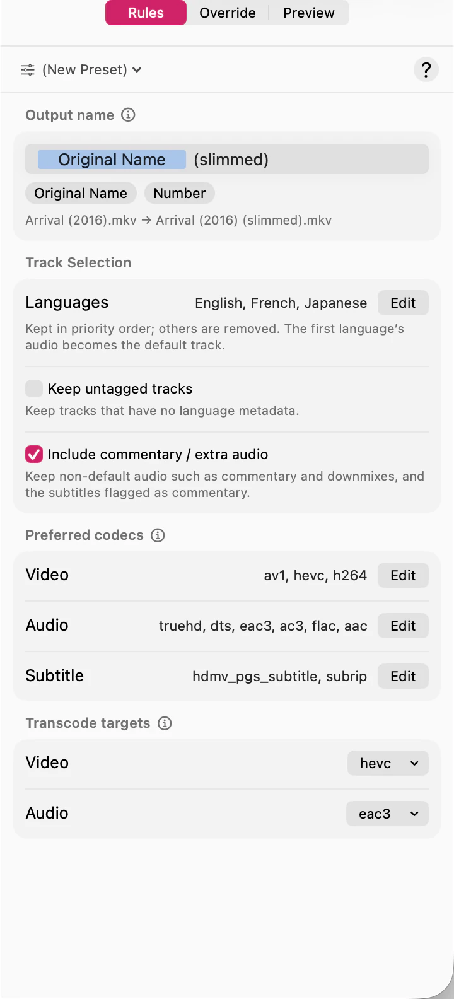

Conserver une piste signifie en principe la copier telle quelle. Mais il arrive que la piste que vous gardez soit dans un format inutilisable pour vous – par exemple un mixage audio sans perte que votre lecteur ne sait pas décoder. Ces deux réglages décrivent ce cas, et seulement celui-là.
Ce sont deux listes distinctes, avec deux rôles distincts, et mieux vaut bien le comprendre avant de modifier l’une ou l’autre.

Codecs préférés est un filtre appliqué à ce qui se trouve déjà dans le fichier. Il dit : si une piste que je conserve est dans l’un de ces formats, ne la touche pas.
Codecs cibles du transcodage est le repli. Il dit : et si elle ne l’est pas, convertis-la en celui-ci.
Une piste est donc copiée telle quelle quand son codec figure dans la liste des codecs préférés, et convertie vers le codec cible dans le cas contraire. Un fichier dont toutes les pistes sont préférées n’est jamais converti, ce qui est le cas courant, et le plus rapide.
Ajouter plus de codecs à la liste des codecs préférés signifie convertir moins, et non davantage. Cette liste regroupe ce que vous acceptez tel quel.
Les sous-titres ont une liste de codecs préférés mais pas de codec cible : une piste de sous-titres est soit conservée, soit retirée, jamais convertie.
La conversion est la voie lente, et SubTrack vous prévient toujours qu’elle va avoir lieu au lieu de vous surprendre. Sélectionnez un fichier et choisissez Personnalisation dans l’inspecteur – toute piste qui sera convertie l’indique et précise en quoi elle sera convertie.
Choisir de convertir est une chose ; disposer de l’encodeur qui le permet en est une autre. Quand SubTrack vous avertit que la version que vous utilisez ne peut pas écrire un codec cible que vous avez choisi, consultez Si un codec ne peut pas être encodé.